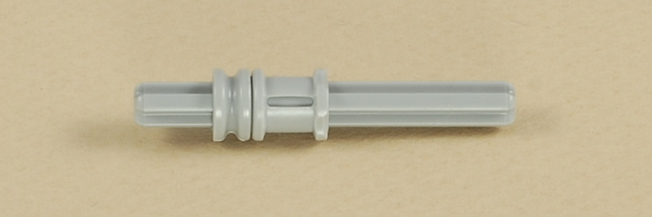
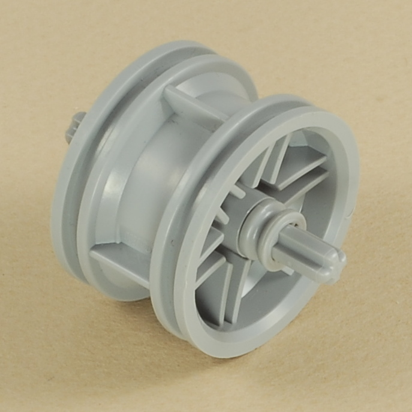
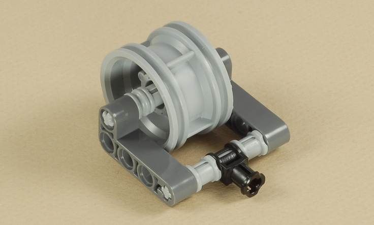

Fun Projects for your LEGO® MINDSTORMS® NXT!
|
|
Fun Projects for your LEGO® MINDSTORMS® NXT! |
| 3-Motor Chassis |
|

1

2
3
4
5
6
7
8
9
 |
OR |
 |
You can use the NXT with either AA batteries or the NXT Rechargeable Battery Pack. |
10
11
| Use two medium (35 cm) wires to connect the two drive
motors to ports B and C on the NXT. Cross the wires
under the NXT to help keep them out of the way, then cross them again in
front so that port B is connected to the motor on the B side, and port C
is connected to the motor on the C side. Pull
the wire slack out away from the center motor. |
12
13


|  |
 |
14



|
3-Motor Chassis Programming The 3-Motor Chassis is sturdy and level and can be used as a base for other projects that need a third motor down low in the front (or back) of the robot (note that you can drive the robot in either direction). You can use it as a starting point for your own projects, and program it however you want. To get you started on basic driving, here are a couple of programs that demonstrate the use of the Move block to do different kinds of turns. The TurnDemo3 program (Easy) shows three kinds of turns using the Move block:
The Spiral program (Intermediate) demonstrates using the Steering parameter on the Move block's data hub to numerically control the amount of turning. It makes the robot drive in a spiral of steadily decreasing radius. |
Alternative Design with Fixed Third WheelAs a variation on the castor wheel design of the 3-Motor Chassis, you can add an axle to prevent the castor wheel from pivoting, as shown below. This will create a straight third wheel that is suitable for use on on hard smooth surfaces by rolling when going straight and sliding from side to side when turning. This will eliminate the little nudge created by a castor wheel when it changes direction, which can lead to more accurate driving. However, without the pivoting castor, the robot will not turn well on carpet.
Partially take apart one side of the castor wheel frame in order to insert the 9-axle through the castor wheel in the position shown below, then reassemble it. Point the castor wheel to the rear as shown to make it more stable.
|
Challenges
|
|
|